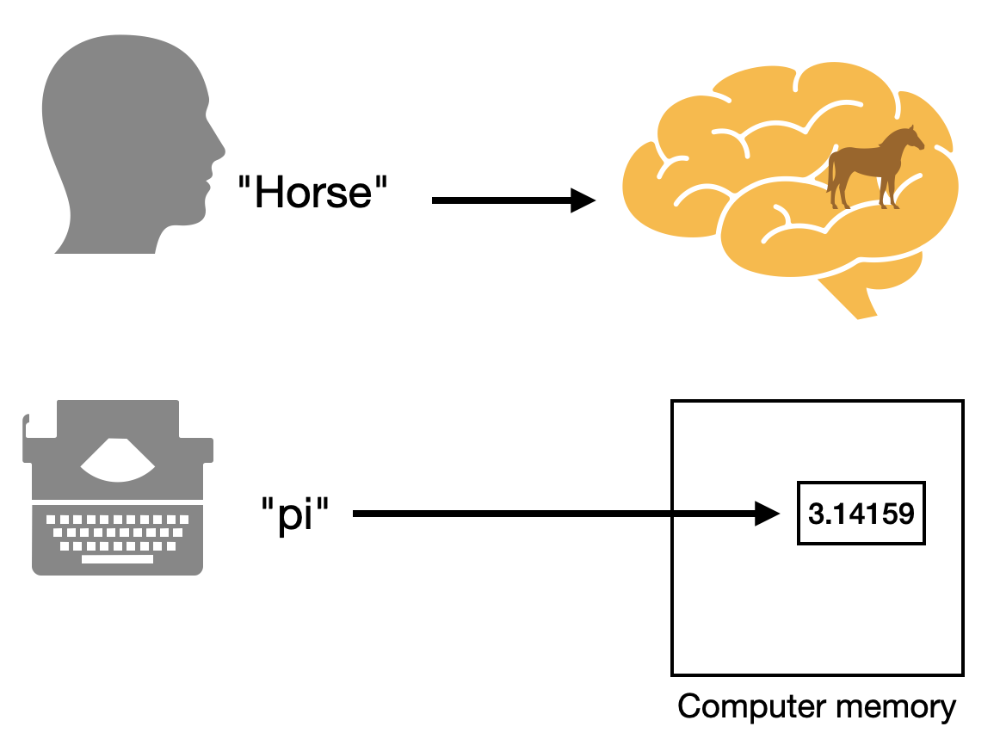
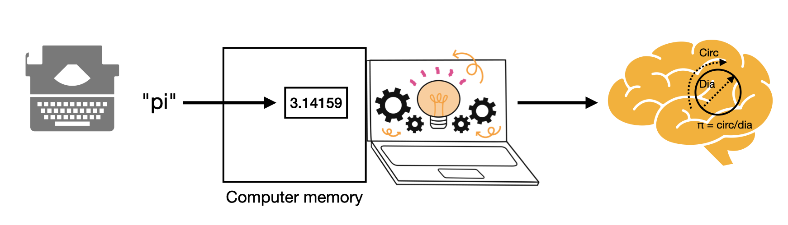
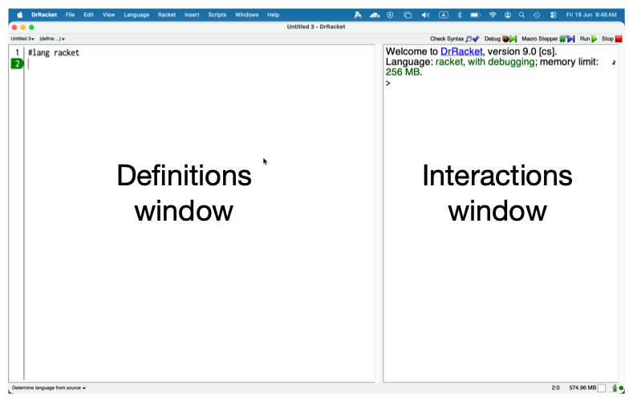

Words¶
When we work with programs, we use a “language” and we’ll need to understand what we mean by a “language” in the context of computing, given that we’re used to using language for communicating with people.
All computer languages work with words and assign meaning to them which might depend on the context in which the words occur. Understanding and working with a program therefore means understanding what the words mean on their own, and how groups of these words determine meaning.
Some of these words and means of combination are defined for you and fixed by the designer of a particular programming language. Some of them are defined for you by authors of “libraries” – which are collections of definitions for what some new words mean. Much of the task of programming therefore is you the programmer defining your own words and what they mean in relation to other already defined words.
In his now famous talk Growing a language, Guy Steele takes us through the process of how a language is developed through definitions.
Task: Watch Growing a language
Watch the talk and observe how Steele builds up his language starting with simple words and defining new ones he needs as he goes along. Though the talk doesn’t require programming knowledge to follow, he is very much talking about the process of programming.
Identifiers¶
When I say “horse”, you might conjure up an image of prototypical horse in your mind’s eye. The more visual of you might complete the scenery around the horse as well. Similarly, when I say “steam engine”, it invokes an image in your mind. When I say “box car”, you might not understand initially what I mean (though you might), but would have some idea of what it might mean by putting together your knowledge of a “box” and a “car” and might, for example, guess that it might mean a “box on wheels”. Now when I say “a horse in a box car pulled by a steam engine”, you can put together the individual pieces to form a scene in your mind.

Fig. 1 The word “horse” invokes the image of a horse in our minds. This can be compared to how a word like “pi” in a program maps to a value stored in computer memory.¶
Much like that, words in an interactive programming language can refer to “values” in computer memory, as illustrated in the figure above. DrRacket’s “interaction window” lets you inspect the values associated with various words it knows about already, by displaying a representation of the value that the word refers to. [3]
We call such words in a programming language “identifiers” as they serve to identify something in computer memory which we’ll call the “value of the identifier”. [2] We say the “identifier is bound to the value”.

Fig. 2 The denotation chain for the identifier pi.¶
The thing to keep in mind is the so called “value” is not actually in the
computer but lies in your mind in the interpretation it gives to whatever it is
the identifier refers to. Without our mind interpreting the number as the ratio
of the circumference to diameter (or some other interpretation depending on
context), there is no real meaning for the value denoted by the identifier
pi. It is our minds that give meaning to the value and therefore the
computer is said to mediate between the identifier and the meaning we give
to it.
Given a rich enough language that we can directly derive the meaning of a given identifier, we might simplify the above figure Fig. 2 down to Fig. 1 in most circumstances. It is here that the difference between computer languages turns out to be significant.
Tip
Nevertheless, it is useful to remember that what is being denoted by an identifier referring to something in computer memory is only realized in meaning within our minds. This is especially easy to forget when the effort required to map words to ideas in our mind reduces over time. This results in some people thinking that LLMs “know” what the words they output refer to and that there is some “entity” behind the scenes that handles that “knowledge”. This has come to be called AI psychosis.
In Racket, you can use the define word to give meaning to (i.e. “bind”) new
words of your own and the interaction window [1] lets you interactively
figure out and understand what the identifiers denote. Furthermore, the Racket
engine keeps information about what kind of a value is denoted by an identifier
along with the information pertaining to the value itself. This type
information is what is used by the interaction window to display a value
appropriately for our understanding. The two main windows are shown in Fig. 3.

Fig. 3 The definitions and interactions windows of DrRacket.¶
Exercise:
Start DrRacket and type the following into a new window.
(define scene "A horse in a box-car drawn by a steam engine.")
Now click the Run button at the top right, type scene into the
“interaction window” and press the “Enter” key. You should see the sentence
printed out.
What we’ve done here is to define the identifier scene to refer to
the piece of text "A horse in a box-car drawn by a steam engine". When
Racket sees a sequence of characters between double quotes, it will construct
a “string value” and the define word will cause the scene word to be
bound to the string value. Henceforth, you’ll be able to use the scene
word to refer to that piece of text.
Common kinds of values¶
All programming languages provide facilities to describe literal values
in programs, which will be read in from the program code and stored in
memory as a value. In the earlier section we saw how a “string” (short for
“string of characters”) is written within double quotes "...". When Racket
sees that, it will recognize it and construct the string of characters as
a value in memory.
Racket also recognizes other kinds of things common with all programming languages. You can type these “literals” into the interaction window and Racket will pretty much show you whatever you typed back at you – because only you know the meaning of a literal.
- Numbers
1,42,-23,3.1415,6.370e6and so on. These get stored as numeric values. The notation like6.370e6is called “scientific notation” and means the number \(6.370 \times 10^6\).- Strings
A sequence of characters (in any script/language) given within double quote characters –
"Horse drawn carriage","Once upon a time ..."and so on.- Characters
Individual characters are notated like
#\a,#\b,#\c,#\1,#\2and so on.- Truth values
#tstands for “true” and#fstands for “false”. These can also be written in full as#trueand#falserespectively, though Racket will always display them as#tand#fso it is good to learn to recognize them.- Symbols
Usually given prefixed with a single quote like
'horse. Such a “quoted symbol” stands for itself as the referrent value. If you type'horsein the interaction window, you’ll get back'horse. Not all programming languages provide symbols as values. A few which do are Racket (any “LiSP family” language), Julia and Prolog.
Phrases and sentences¶
Earlier, we used the define word to introduce a new identifier scene.
We had to type it in a special manner –
(define <identifier> <value>)
There is an open parenthesis ( followed by the word define, which is
itself followed by the identifier to introduce, which is followed by the value
that the identifier must be bound to. We mark the end of the definition with a
closing parenthesis ).
Here, define is a special kind of thing that we haven’t introduced yet. It
does refer to a value, but a special kind of value which we’ll get into later.
The more important aspect of this is the form (<operator> <operand1>
<operand2> ...). The operator and the operands are all written
separated by one or more spaces, much like a sentence. The operator
gives meaning to the entire parenthetical construct. In the case where
the operator was define, the (define ...) serves as the definition
of an identifier.
That’s the key.
All Racket programs are built up of these kinds of “sentences” we’ll call “symbolic expressions” or “s-expressions” for short. While Racket provides many pre-defined operators for us to use, we can also define our own operators and we’ll see how shortly below.
The vocabulary of Racket¶
… is very large!
So large that no single person, not even Racket’ creators, might know all of
it. There is a core vocabulary that comes with the #lang racket declaration
you’ve seen used at the start of your file(s). Even this is rather large, and a
large vocabulary makes for a large space of possibilities.
Fortunately for most of us, much of this vocabulary is structured in a manner you can find out about the words you need when you need them by searching the Racket documentation. Below are some commonly used “operator” words for your reference -
- Math
The usual operators
+ - * / sqrt sin cos tan asin acos atan sinh cosh tanh asinh acosh atanhare all available. There are more mathematical operators (“functions”) you can lookup in the documentation. Some example expressions using them are –(+ 3 4),(* (sin 2) (cos 2)),(+ (* 3 3) (* 4 4)).There are also various comparison operators
< <= > >= = !=and various ways to combine the truth values (also known as “boolean values”) that they determine using(and b1 b2 ...),(or b1 b2 ...),(not bval).Remember that all these operators are to be used using the same form
(<operator> <operand1> <operand2> ...), with the number of operands varying between the operators.
- Strings
(string-append s1 s2 ...)will concatenate all the given strings into one string. i.e.(string-append "hello" "+" "world")reduces to the string value"hello+world".(string-ref <str> <0-based-index>)will get you the character at the given index. For ex:(string-ref "hello" 1)will get you the character value#\e.(string-length <str>)the number of characters in the given string. So(string-length "hello")will give you5.(substring <str> <start-index> <end-index>)picks a portion of the given string. For ex:(substring "hello world" 6 11)will pick out"world".Strings can also be compared using
string=?,string<?,string<=?,string>?andstring>=?. Notice that the words that stand for “is this true or false?” use the convention that their names end with a question mark. So(string=? s1 s2)is asking “Is the string s1 the same as s2?” and therefore the name of the operator indicates that by ending with a question mark. So, yes, our “words” here are more than human language words.Convert strings into upper and lower case using
string-upcase,string-downcaseorstring-titlecase.You can convert numbers to strings and vice versa using
string->numberandnumber->string.
- Symbols
(symbol? val)asks whether thevalis a symbol or not. So(symbol? 'hello)will be#twhereas(symbol? 2.3)will be#f.You can convert symbols to strings and vice versa using
string->symbolandsymbol->string. You might now notice that words that “convert” one kind of a value to another kind generally use the arrow notation in their names.
There are more of interest to us which we’ll discuss soon.
Pictures as values¶
Type the following at the start of your Racket file –
#lang racket
(require 2htdp/image)
The require word when used with a package name like that indicates that the
words defined and “provided” by the package are now to be considered “in
context” for the rest of the text of the program in the definitions window.
We’re now borrowing all the definitions associated with working with pictures.
Click on “Run”.
Now, all the words defined in the package named “2htdp/image” are available
for you to play with. For example, type the word circle into the interaction
window and press the <enter> key. You’ll see <procedure:circle> displayed.
This means the circle identifier refers to a procedure and can therefore
be used in the operator position. Type the following into the interaction window –
(circle 20 'solid 'blue)
You should see a solid blue circle show up. The 20 is the radius of the circle.
Try varying that for different values of the radius and colour.
Notice that we’re using the 'solid and 'blue quoted symbols as
operands. So to read that sentence, it would say – “Construct a circle of
radius 20 units, filled solid with the colour blue.”
Now, what the interaction window shows you is a representation of the value and
much as you can copy and paste text, you can do the same with these pictures as
well. Let’s find out the number of units of width this circle picture is. If we
know our geometry, we should expect it to be twice the radius, which is 40
units. So copy the circle picture by selecting it first and hitting “ctrl-c” or
“cmd-c” (depending on your operating system). Then type (image-width and
then a space. Now paste the picture using “ctrl-v” or “cmd-v”, then type )
and then press <enter>.
You should see 40 displayed in the interaction window.
image-width is a “procedure word” whose definition is provided in the 2htdp/image
package. It’s purpose is to tell you the width of the image given as an operand.
Now, we constructed the circle picture using the (circle 20 'solid 'blue) expression
(or “sentence”). So it is natural to expect that (image-width (circle 20 'solid 'blue))
will also give you 40 as the value.
We’re now seeing how such “phrases” and “sentences” can be combined to make more complex values. In this case, our expression is now saying “the image width of the circle of radius 20 painted solid blue”.
Some picture words and how to use them in expressions -
(circle <radius> <mode> <color-symbol>)makes a circle. Example(circle 20 'solid 'blue)or(circle 20 'outline 'green). Here<mode>is either'solidor'outline.(rectangle <width> <height> <mode> <color>)- you can guess that this makes a rectangle.(overlay <image1> <image2>)- our first image combination which overlays the first image on the second, making a new composite image.(empty-scene <width> <height>)makes an empty image of the given dimensions. You can now overlay stuff on top of this.(place-image <image> <at-x> <at-y> <background-image>)will place the given image at the given position (at-xunits from the left andat-yunits from the top) on top of the given background image.(beside <image1> <image2> ...)makes a new image by placing the given images left to right.(above <image1> <image2> ...)makes a new image by placing the given images top to bottom.
Task
Using circle, rectangle, empty-scene and place-image, draw
a cricket pitch or a cricket bat/ball representation.
You can find more “image making and manipulating words” in the 2htdp/image package or go through how to use them in the Image Guide.